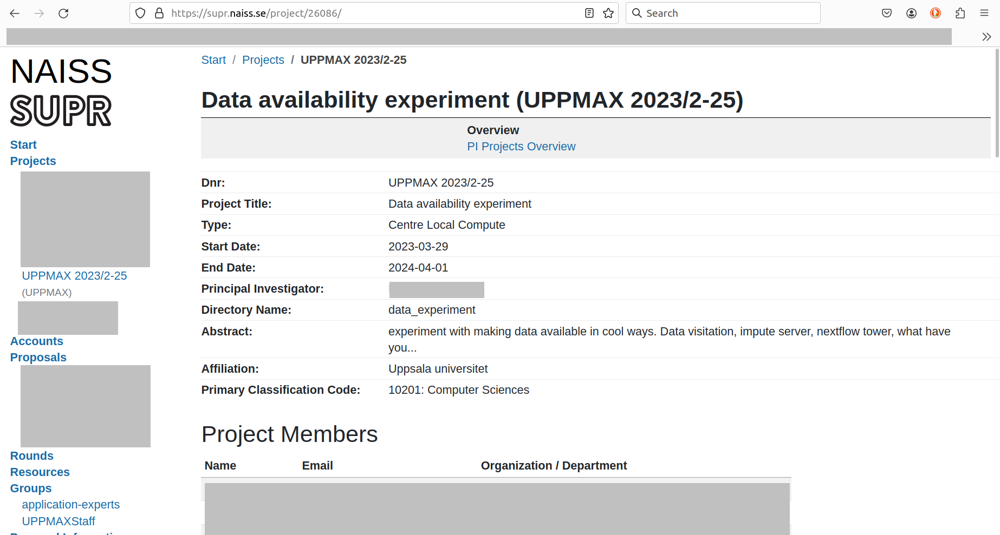

Using Slurm on Pelle¶
This page describes how to use Slurm on Pelle.
What is Slurm?
What is Pelle?
See Slurm troubleshooting how to fix Slurm errors.
What about other clusters?
Newer Slurm
-
Slurm on Pelle have been upgraded to version 25.05.
-
Several UPPMAX-specific Slurm changes from previous clusters have been removed, to make the config use more Slurm defaults. This makes the system easier to maintain and will behave more similar to clusters at other sites. Unfortunately this means that some extra changes to job scripts can be needed when moving from Rackham/Snowy.
Warning
- The max time limit for jobs is 10 days.
- GPU jobs has a time limit of 2 days.
Info
- We recommend to replace the Slurm option
-n(recommended in our documentation before), when allocating several cores, with-c(CPUs-per-task) - This prevents the allocation to be spread among multiple nodes.
- If you, however, are using MPI, you should define the number of tasks with
-n(number of tasks (in total)). - The reason why
-coften can/could be used interchangeably with-nis the default value of one core per task.
Quick start¶
Quick start for starting jobs on Pelle
Ways to start jobs
-
Interactive
- work interactively, starting programs and view data etcetera on a compute node
interactive -A uppmax202X-Y-ZZZ -c 2 -t 3:0:0- read more
-
Batch system
- Allocate much resources or long wall times and let job run by its own without interaction with you
batch <submit script>- read more
Wall times
- Specify the maximum time needed before slurm breaks the job.
-t 10:010 minutes-t 10:0:010 hours-t 5-10:0:05 days and 10 hours
Resources
- What kind of computations do you need?
- Core jobs (Default):
-c <number of cores>- read more
- Node jobs:
-N <number of nodes>- read more
- Jobs using MPI:
-n <number of tasks>
- Large memory jobs:
-p fat- read more
- GPU (NVIDIA) jobs
- T4 (we have many!):
interactive -A staff -p haswell -c 1 -t 1:0:0 --gpus=t4 - Faster L40s (4 nodes with 10 GPUs each):
interactive -A staff -t 1:0:0 -p gpu --gpus=l40s:1 - Superfast H100 (2 nodes with 2 GPUs each):
interactive -A staff -t 1:0:0 -p gpu --gpus=h100:1 - read more
- T4 (we have many!):
- Intel Haswell nodes (with 16 cores per node)
-p haswell ...
sbatch (and interactive) on Pelle¶
sbatch (and interactive) work the same as on the other clusters,
the only difference is that some flags/options may be different, like partition name, see below.
Want to start an interactive session?
Here it is shown how to submit a job with:
Partitions on Pelle¶
Partition flag is either --partition or -p
| Partition name | Description |
|---|---|
pelle |
(Default) Use one or more CPU cores |
fat |
Use a fat node with 2 or 3 TB memory, see below |
gpu |
GPU node, 2 types see below |
haswell |
Old Snowy/Irma nodes, half with GPUs (T4) |
The pelle partition¶
The pelle partition is default so you can omit specifying -p or --partition
Its allocates an ordinary CPU node (allows one to use one or more cores, up to 96 cores).
Warning
- Time limit is 10 days on the CPU nodes.
- You may, if really needed, ask for more through the support
support@uppmax.uu.se.
Info
The compute node CPUs have Simultaneous multithreading (SMT) enabled. Each CPU core runs two Threads. In Slurm the Threads are referred to as CPUs. Learn more here about SMT
Architecture¶
| No of nodes | CPUs | Cores Threads |
Memory | Scratch | GPUs | Name |
|---|---|---|---|---|---|---|
| 115 | AMD EPYC 9454P (Zen4) 2.75 GHz | 48 96 |
768 GiB | 1.7 TB | N/A | p[1-115] |
Much more cores per node compared to Rackham
- You can now have 96 parallel processes per node!
 Even more important that you not by mistake allocate a full node when needing just a part of it.
Even more important that you not by mistake allocate a full node when needing just a part of it.- A full node is 768 GB, compared to 128 GB on Rackham. That means less need for a "fat" partition allocation.
Examples with core jobs¶
Here is the minimal use for one core:
For example:
To specify multiple cores, use --cpu-per-tasks (or -c) like this:
For example:
Here, two cores are used.
What is the relation between ntasks and number of cores?
Agreed, the flag ntasks only indicates the number of tasks.
However, by default, the number of tasks per core is set to one.
One can make this link explicit by using:
This is especially important if you might adjust core usage of the job to be something less than a full node.
- One task, using two threads:
--ntasks=1 --cpus-per-task=2 - Two tasks, using one thread each:
--ntasks=2 --cpus-per-task=1
Examples with node jobs¶
- On Rackham you have used
-p nodeor-p coreto specify node/core jobs. -
This is not used on Pelle. Instead Slurm's standard options is used to specify the job requirements.
-
Example to request 2 full nodes:
--nodes=2 --exclusive
Job memory specification¶
- Currently you do not have to request additional CPUs to get additional memory.
- You can use all Slurm options
--mem--mem-per-cpu
The fat partition¶
With the fat partition you reach compute nodes with more memory.
Warning
- Time limit is 10 days on the fat nodes.
- You may, if really needed, ask for more through the support
support@uppmax.uu.se.
Pelle has two fat nodes. One with 2 TiB of memory and one with 3 TiB.
Note
Jobs on these nodes always allocate the entire node with all cores.
-
To allocate 2 TB:
-p fat -C 2TB- Example:
interactive -A staff -t 1:0:0 -p fat -C 2TB
- Example:
-
To allocate 3 TB:
-p fat -C 3TB- Example:
interactive -A staff -t 1:0:0 -p fat -C 3TB
- Example:
The gpu partition¶
With the gpu partition you reach the nodes with GPUs.
Warning
- Time limit is 2 days.
- You may, if really needed, ask for more through the support
support@uppmax.uu.se.
There are two kinds of GPUs at the moment.
- 4 of the lighter type
L40s, enough for most problems. Each node has 10 (!) GPUs. Most often just one GPU is needed, so remember to state that you need just 1, see below. - 2 of the large type
H100, which can be suitable for large training runs. Each node has 2 GPUs. Most often just one GPU is needed, so remember to state that you need just 1, see below.
Therefore, at first hand, allocate the default L40s and one of them
-
To allocate L40s:
-p gpu --gpus=l40s:<number of GPUs>- Example with 1 GPU:
interactive -A staff -t 1:0:0 -p gpu --gpus=l40s:1 - Example with 11 GPUs:
interactive -A staff -t 1:0:0 -p gpu --gpus=l40s:11will fail because there are just 10 GPUs on one node!
- Example with 1 GPU:
-
To allocate H100:
-p gpu --gpus=h100:<number of GPUs>- Example with 1 GPU:
interactive -A staff -t 1:0:0 -p gpu --gpus=h100:1 - Example with 3 GPU:
interactive -A staff -t 1:0:0 -p gpu --gpus=h100:3will fail because there are just 2 GPUs on one node!
- Example with 1 GPU:
-
Currently you do not have to request additional CPUs to get additional memory.
- You can use all Slurm options
--mem--mem-per-cpu--mem-per-gputo specify memory requirements.
The haswell partition¶
| No of nodes | CPUs | Cores = Threads | Memory | Scratch | GPUs | Name |
|---|---|---|---|---|---|---|
| 34 | 2x Xeon E5-2630 v3 2.4 GHz (Haswell) | 16 | 256 GiB | 1.8 TB | N/A | p[1001-1036] |
| 34 | 2x Xeon E5-2630 v3 2.4 GHz (Haswell) | 16 | 256 GiB | 1.8 TB | NVIDIA T4 | p[2001-2036] |
sbatch a script with command-line Slurm parameters¶
The minimal command to use sbatch with command-line Slurm parameters is:
where [project_code] is the project code, and [script_filename]
the name of a bash script, for example:
Forgot your Rackham project?
One can go to the SUPR NAISS pages to see one's projects,

Example of the Rackham project called 'UPPMAX 2023/2-25'
On the SUPR NAISS pages, projects are called 'UPPMAX [year]/[month]-[day]',
for example, 'UPPMAX 2023/2-25'.
The UPPMAX project name, as to be used on Rackham,
has a slightly different name:
the account name to use on Rackham is uppmax[year]-[month]-[day],
for example, uppmax2023-2-25
What is in the script file?
The script file my_script.sh is a minimal example script.
Such a minimal example script could be:
Again, what is shown here is a minimal use of sbatch.
sbatch a script with Slurm parameters in script¶
The minimal command to use sbatch with Slurm parameters in the script:
where [script_filename] the name of a bash script, for example:
The script must contain at least the following lines:
where [project_code] is the project code, for example:
Forgot your Pelle project?
One can go to the SUPR NAISS pages to see one's projects,
Example of the Rackham project called 'UPPMAX 2023/2-25'
On the SUPR NAISS pages, projects are called 'UPPMAX [year]/[month]-[day]',
for example, 'UPPMAX 2023/2-25'.
The UPPMAX project name, as to be used on Rackham,
has a slightly different name:
the account name to use on Rackham is uppmax[year]-[month]-[day],
for example, uppmax2023-2-25
A full example script would be:
SMT¶
The compute node CPUs have Simultaneous multithreading (SMT) enabled. Each CPU core runs two Threads. In Slurm the Threads are referred to as CPUs.
Different jobs are never allocated to the same CPU core. The smallest possible job always gets one Core with two Threads (CPUs).
Jobs requesting multiple tasks or cpus gets threads by default.
Some examples:
--ntasks=2- one core, two threads--ntasks=1 --cpus-per-task=4- two cores, four threads--ntasks=2 --cpus-per-task=3- three cores, six threads.
One thread per core to avoid SMT¶
If you suspect SMT degrades the performance of your jobs, you can you
can specify --threads-per-core=1 in your job.
Same examples as before but with --threads-per-core=1:
--ntasks=2 --threads-per-core=1- two cores, (4 threads, 2 used)--ntasks=1 --cpus-per-task=4 --threads-per-core=1- 4 cores (8 threads, 4 unused)--ntasks=2 --cpus-per-task=3 --threads-per-core=1- 6 cores (12 threads, 6 unused)
When doing this you should launch your tasks using srun to ensure
your processes gets pinned to the correct CPUs (threads), one per
core.
Again, what is shown here is a minimal use of sbatch.